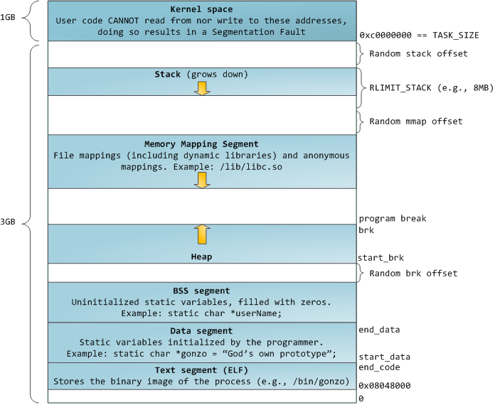

Table of Contents
這篇主要放在 https://github.com/wdv4758h/notes/blob/master/memory-management.rst 那邊才保證是最新的 :P
在現今流通的電腦架構中，要執行一個程式就會需要用到記憶體， 而我們在撰寫程式時，依照不同的語言，會給程式設計師不同的記憶體操作程度。 例如 C 會給你操控 pointer 來對記憶體做各式各樣的處理， 但是像是 Python 這種相對高階的語言則會把記憶體相關的處理打包起來， 讓程式設計師可以專注在計算的撰寫上而不是底層記憶體的掌控。 這當然有好有壞，端看需求來做 tradeoff， 一邊是可以對資源做細部的控制，來用少量的資源達到要做的事， 一邊則是更注重在快速的把可以用的程式寫出來。
在實際開始之前，我們需要先知道一些概念。 在現代常見的電腦中，每隻程式所能看到的記憶體是受限的， 大家會被區隔開來，每隻程式都會以為只有自己在執行，看不到其他人， 這麼做可以保護程式，讓程式間不互相干擾。 想像一下，假如在沒有區隔開的情況下，我寫了一個 C 程式， 不小心沒寫好，裡面的 pointer 可能指向別的程式的資料， 然後還不小心改到，這是多麼可怕的事。 這樣的區隔機制稱為 “Virtual Memory”， 其中的 Virtual 指的意思是分給程式的記憶體空間不是真的實體記憶體， 而是做了一層控管，在存取時中間會把 Virtual Address 轉換成實際的 Physical Address， 而各程式看到的都是同樣的一大塊空間，但其實底下對應到的是不同實體記憶體。 (要做到這樣的機制需要 MMU (memory management unit) 的硬體支援)
在 Virtual Memory 之上，每隻程式看到的記憶體又會依照不同的使用而分區塊， 其中在程式執行時，變數常存在的地方為 Stack 和 Heap， 接下來就來看看裡面在幹嘛。
Stack & Heap¶
在講記憶體管理的一開始，我們先來看看資料在記憶體中是如何被放置的。
Linux process :
其中 Stack 是 local variables 和 function parameters 的地方， 每呼叫一次 function 就會 push 一個 stack frame 進去， 每次 function 回傳時就會被清掉。
[Error] 這邊可以注意到，如果我們不斷地 push 到 stack 裡，
最後超過可容許的大小，就會產生 stack overflow
因為放在 stack 上的資料會在回傳時被清掉， 當遇到回傳後仍需使用的情況， 就要把資料放在 Heap。
在 C 中要使用 Heap 就需要用 malloc 並設定需要的大小， 用完後需要使用 free 來清除。 這些步驟在一般使用 Stack 的情況中都不需要， 但是 Heap 的特別處就在於不會受限於特定的 scope 裡， 就算 function 回傳還是可以正常使用，也常用動態決定資料大小的情況。
example :
// C
#include <stdio.h>
#include <stdlib.h> // malloc, free, atoi
int main (int argc, char *argv[]) {
int *dynamic_array;
if (argc < 2) {
printf("Please give a number\n");
} else {
int size = atoi(argv[1]);
dynamic_array = (int*) malloc (sizeof(int) * size);
for (int i = 0; i < size; i++) {
printf("%d\n", dynamic_array[i]);
}
free(dynamic_array);
}
return 0;
}
more example (新 malloc 的記憶體真的是新的嗎？) :
// C
#include <stdio.h>
#include <stdlib.h> // malloc, free, atoi
int main (int argc, char *argv[]) {
int *dynamic_array;
if (argc > 1) {
int size = atoi(argv[1]);
dynamic_array = (int*) malloc (sizeof(int) * size);
printf("first time\n");
for (int i = 0; i < size; i++) {
printf("%d\n", dynamic_array[i]);
}
for (int i = 0; i < size; i++) {
// modify
dynamic_array[i] = i * i;
}
free(dynamic_array);
// get some new memory
dynamic_array = (int*) malloc (sizeof(int) * size);
printf("second time\n");
for (int i = 0; i < size; i++) {
printf("%d\n", dynamic_array[i]);
}
free(dynamic_array);
} else {
printf("Please give a number\n");
}
return 0;
}
Common Memory Problem¶
管理
- double free (清多次)
- memory leak (沒清到)
使用
- use after free (清了還用)
- dangling pointer (清了還用)
- heap overflow (寫超過)
- stack buffer overflow (寫超過)
- buffer over-read (讀超過)
- stack overflow (用太多)
double free¶
source code :
// C
#include <stdio.h>
#include <stdlib.h> // malloc, free
int main() {
int *x = malloc(sizeof(int));
printf("origin : %d\n", *x);
*x = 10;
printf("assign : %d\n", *x);
free(x);
free(x);
return 0;
}
compile :
$ gcc -Wall -std=c11 -g double-free.c -o double-free
執行
origin : 0
assign : 10
*** Error in `./double-free': double free or corruption (fasttop): 0x00000000013e3010 ***
======= Backtrace: =========
/usr/lib/libc.so.6(+0x71bad)[0x7ffb1c21cbad]
/usr/lib/libc.so.6(+0x770fe)[0x7ffb1c2220fe]
/usr/lib/libc.so.6(+0x778db)[0x7ffb1c2228db]
./double-free[0x4005fc]
/usr/lib/libc.so.6(__libc_start_main+0xf0)[0x7ffb1c1cb790]
./double-free[0x4004c9]
======= Memory map: ========
00400000-00401000 r-xp 00000000 00:1e 1685697 /tmp/memory/double-free
00600000-00601000 rw-p 00000000 00:1e 1685697 /tmp/memory/double-free
013e3000-01404000 rw-p 00000000 00:00 0 [heap]
7ffb1bf95000-7ffb1bfab000 r-xp 00000000 08:01 137661 /usr/lib/libgcc_s.so.1
7ffb1bfab000-7ffb1c1aa000 ---p 00016000 08:01 137661 /usr/lib/libgcc_s.so.1
7ffb1c1aa000-7ffb1c1ab000 rw-p 00015000 08:01 137661 /usr/lib/libgcc_s.so.1
7ffb1c1ab000-7ffb1c344000 r-xp 00000000 08:01 134345 /usr/lib/libc-2.21.so
7ffb1c344000-7ffb1c543000 ---p 00199000 08:01 134345 /usr/lib/libc-2.21.so
7ffb1c543000-7ffb1c547000 r--p 00198000 08:01 134345 /usr/lib/libc-2.21.so
7ffb1c547000-7ffb1c549000 rw-p 0019c000 08:01 134345 /usr/lib/libc-2.21.so
7ffb1c549000-7ffb1c54d000 rw-p 00000000 00:00 0
7ffb1c54d000-7ffb1c56f000 r-xp 00000000 08:01 134444 /usr/lib/ld-2.21.so
7ffb1c72a000-7ffb1c72d000 rw-p 00000000 00:00 0
7ffb1c76c000-7ffb1c76e000 rw-p 00000000 00:00 0
7ffb1c76e000-7ffb1c76f000 r--p 00021000 08:01 134444 /usr/lib/ld-2.21.so
7ffb1c76f000-7ffb1c770000 rw-p 00022000 08:01 134444 /usr/lib/ld-2.21.so
7ffb1c770000-7ffb1c771000 rw-p 00000000 00:00 0
7ffe79fa4000-7ffe79fc5000 rw-p 00000000 00:00 0 [stack]
7ffe79fdf000-7ffe79fe1000 r--p 00000000 00:00 0 [vvar]
7ffe79fe1000-7ffe79fe3000 r-xp 00000000 00:00 0 [vdso]
ffffffffff600000-ffffffffff601000 r-xp 00000000 00:00 0 [vsyscall]
Aborted (core dumped)
memory leak¶
source code :
// C
#include <stdio.h>
#include <stdlib.h> // malloc
#include <unistd.h> // getpid
int main() {
long long *x;
printf("pid : %d\n", getpid());
printf("per size %lu\n", sizeof(long long));
while (1) {
// malloc, no free
x = malloc(sizeof(long long) * 1000);
getchar();
}
return 0;
}
compile :
$ gcc -Wall -std=c11 -g memory-leak.c -o memory-leak
觀看 Memory 使用：
$ pmap -x $pid
30593: ./a.out
Address Kbytes RSS Dirty Mode Mapping
0000000000400000 4 4 0 r-x-- a.out
0000000000600000 4 4 4 rw--- a.out
0000000002572000 136 8 8 rw--- [ anon ]
00007fe14389b000 1636 1044 0 r-x-- libc-2.21.so
00007fe143a34000 2044 0 0 ----- libc-2.21.so
00007fe143c33000 16 16 16 r---- libc-2.21.so
00007fe143c37000 8 8 8 rw--- libc-2.21.so
00007fe143c39000 16 8 8 rw--- [ anon ]
00007fe143c3d000 136 136 0 r-x-- ld-2.21.so
00007fe143e1b000 12 12 12 rw--- [ anon ]
00007fe143e5c000 8 4 4 rw--- [ anon ]
00007fe143e5e000 4 4 4 r---- ld-2.21.so
00007fe143e5f000 4 4 4 rw--- ld-2.21.so
00007fe143e60000 4 4 4 rw--- [ anon ]
00007fff33951000 132 8 8 rw--- [ stack ]
00007fff3397a000 8 0 0 r---- [ anon ]
00007fff3397c000 8 4 0 r-x-- [ anon ]
ffffffffff600000 4 0 0 r-x-- [ anon ]
---------------- ------- ------- -------
total kB 4184 1268 80
$ cat /proc/$pid/smaps | grep -A 15 heap
02572000-02594000 rw-p 00000000 00:00 0 [heap]
Size: 136 kB
Rss: 8 kB
Pss: 8 kB
Shared_Clean: 0 kB
Shared_Dirty: 0 kB
Private_Clean: 0 kB
Private_Dirty: 8 kB
Referenced: 8 kB
Anonymous: 8 kB
AnonHugePages: 0 kB
Swap: 0 kB
KernelPageSize: 4 kB
MMUPageSize: 4 kB
Locked: 0 kB
VmFlags: rd wr mr mw me ac
use after free¶
source code :
// C
#include <stdio.h>
#include <stdlib.h> // malloc
int main() {
int *x;
x = malloc(sizeof(int));
*x = 9;
printf("use before free : %d\n", *x);
free(x);
printf("use after free : %d\n", *x);
int *y = malloc(sizeof(int));
*y = 10;
printf("use after free : %d\n", *x);
return 0;
}
compile :
$ gcc -Wall -std=c11 -g use-after-free.c -o use-after-free
$ ./use-after-free
use before free : 9
use after free : 0
use after free : 10
heap overflow¶
source code :
// C
#include <stdio.h>
#include <stdlib.h> // malloc, free
#include <string.h> // strlen
int main() {
const char s1[] = "This is a test.";
const char s2[] = "This is a test. This is a test.";
char *x = malloc(sizeof(char) * strlen(s1));
strcpy(x, s2);
free(x);
return 0;
}
compile :
$ gcc -Wall -std=c11 -g heap-overflow.c -o heap-overflow
執行：
$ ./heap-overflow
*** Error in `./heap-overflow': free(): invalid next size (fast): 0x000000000250e010 ***
======= Backtrace: =========
/usr/lib/libc.so.6(+0x71bad)[0x7f38d091cbad]
/usr/lib/libc.so.6(+0x770fe)[0x7f38d09220fe]
/usr/lib/libc.so.6(+0x778db)[0x7f38d09228db]
./heap-overflow[0x400669]
/usr/lib/libc.so.6(__libc_start_main+0xf0)[0x7f38d08cb790]
./heap-overflow[0x400509]
======= Memory map: ========
00400000-00401000 r-xp 00000000 00:1e 1894065 /tmp/memory/heap-overflow
00600000-00601000 rw-p 00000000 00:1e 1894065 /tmp/memory/heap-overflow
0250e000-0252f000 rw-p 00000000 00:00 0 [heap]
7f38d0695000-7f38d06ab000 r-xp 00000000 08:01 137661 /usr/lib/libgcc_s.so.1
7f38d06ab000-7f38d08aa000 ---p 00016000 08:01 137661 /usr/lib/libgcc_s.so.1
7f38d08aa000-7f38d08ab000 rw-p 00015000 08:01 137661 /usr/lib/libgcc_s.so.1
7f38d08ab000-7f38d0a44000 r-xp 00000000 08:01 134345 /usr/lib/libc-2.21.so
7f38d0a44000-7f38d0c43000 ---p 00199000 08:01 134345 /usr/lib/libc-2.21.so
7f38d0c43000-7f38d0c47000 r--p 00198000 08:01 134345 /usr/lib/libc-2.21.so
7f38d0c47000-7f38d0c49000 rw-p 0019c000 08:01 134345 /usr/lib/libc-2.21.so
7f38d0c49000-7f38d0c4d000 rw-p 00000000 00:00 0
7f38d0c4d000-7f38d0c6f000 r-xp 00000000 08:01 134444 /usr/lib/ld-2.21.so
7f38d0e2a000-7f38d0e2d000 rw-p 00000000 00:00 0
7f38d0e6d000-7f38d0e6e000 rw-p 00000000 00:00 0
7f38d0e6e000-7f38d0e6f000 r--p 00021000 08:01 134444 /usr/lib/ld-2.21.so
7f38d0e6f000-7f38d0e70000 rw-p 00022000 08:01 134444 /usr/lib/ld-2.21.so
7f38d0e70000-7f38d0e71000 rw-p 00000000 00:00 0
7fffdc083000-7fffdc0a4000 rw-p 00000000 00:00 0 [stack]
7fffdc13b000-7fffdc13d000 r--p 00000000 00:00 0 [vvar]
7fffdc13d000-7fffdc13f000 r-xp 00000000 00:00 0 [vdso]
ffffffffff600000-ffffffffff601000 r-xp 00000000 00:00 0 [vsyscall]
Aborted (core dumped)
stack buffer overflow¶
source code:
// C
#include <stdio.h>
int main() {
int x = 0;
char c[1];
printf("x : %d\n", x);
scanf("%s", c);
printf("x : %d\n", x);
return 0;
}
compile :
$ gcc -Wall -std=c11 -g stack-buffer-overflow.c -o stack-buffer-overflow
執行：
$ ./stack-buffer-overflow
x : 0
test
x : 7631717
buffer over-read¶
source code :
// C
#include <stdio.h>
int main() {
int x = 'z';
char c[1];
c[0] = 'a';
printf("c[0] : %c\n", c[0]);
printf("c[1] : %c\n", c[1]); // read x
return 0;
}
compile :
$ gcc -Wall -std=c11 -g buffer-over-read.c -o buffer-over-read
執行：
$ ./buffer-over-read
c[0] : a
c[1] : z
stack overflow¶
// C
#include <stdio.h>
void stack_overflow() {
static int count = 0;
count++;
printf("count : %d\n", count);
stack_overflow();
}
int main() {
stack_overflow();
return 0;
}
$ gcc -Wall -O0 -std=c11 -g stack-overflow.c -o stack-overflow # avoid optimization
Debugger¶
- Valgrind
Valgrind¶
double free¶
執行：
$ valgrind ./double-free
Valgrind output
==22811== Memcheck, a memory error detector
==22811== Copyright (C) 2002-2013, and GNU GPL'd, by Julian Seward et al.
==22811== Using Valgrind-3.10.1 and LibVEX; rerun with -h for copyright info
==22811== Command: ./double-free
==22811==
==22811== Conditional jump or move depends on uninitialised value(s)
==22811== at 0x4E7D3DC: vfprintf (in /usr/lib/libc-2.21.so)
==22811== by 0x4E84E38: printf (in /usr/lib/libc-2.21.so)
==22811== by 0x4005C2: main (double-free.c:8)
==22811==
==22811== Use of uninitialised value of size 8
==22811== at 0x4E7A33B: _itoa_word (in /usr/lib/libc-2.21.so)
==22811== by 0x4E7D6BD: vfprintf (in /usr/lib/libc-2.21.so)
==22811== by 0x4E84E38: printf (in /usr/lib/libc-2.21.so)
==22811== by 0x4005C2: main (double-free.c:8)
==22811==
==22811== Conditional jump or move depends on uninitialised value(s)
==22811== at 0x4E7A345: _itoa_word (in /usr/lib/libc-2.21.so)
==22811== by 0x4E7D6BD: vfprintf (in /usr/lib/libc-2.21.so)
==22811== by 0x4E84E38: printf (in /usr/lib/libc-2.21.so)
==22811== by 0x4005C2: main (double-free.c:8)
==22811==
==22811== Conditional jump or move depends on uninitialised value(s)
==22811== at 0x4E7D730: vfprintf (in /usr/lib/libc-2.21.so)
==22811== by 0x4E84E38: printf (in /usr/lib/libc-2.21.so)
==22811== by 0x4005C2: main (double-free.c:8)
==22811==
==22811== Conditional jump or move depends on uninitialised value(s)
==22811== at 0x4E7D4AB: vfprintf (in /usr/lib/libc-2.21.so)
==22811== by 0x4E84E38: printf (in /usr/lib/libc-2.21.so)
==22811== by 0x4005C2: main (double-free.c:8)
==22811==
==22811== Conditional jump or move depends on uninitialised value(s)
==22811== at 0x4E7D837: vfprintf (in /usr/lib/libc-2.21.so)
==22811== by 0x4E84E38: printf (in /usr/lib/libc-2.21.so)
==22811== by 0x4005C2: main (double-free.c:8)
==22811==
==22811== Conditional jump or move depends on uninitialised value(s)
==22811== at 0x4E7D4FB: vfprintf (in /usr/lib/libc-2.21.so)
==22811== by 0x4E84E38: printf (in /usr/lib/libc-2.21.so)
==22811== by 0x4005C2: main (double-free.c:8)
==22811==
==22811== Conditional jump or move depends on uninitialised value(s)
==22811== at 0x4E7D53B: vfprintf (in /usr/lib/libc-2.21.so)
==22811== by 0x4E84E38: printf (in /usr/lib/libc-2.21.so)
==22811== by 0x4005C2: main (double-free.c:8)
==22811==
==22811== Invalid free() / delete / delete[] / realloc()
==22811== at 0x4C2B200: free (in /usr/lib/valgrind/vgpreload_memcheck-amd64-linux.so)
==22811== by 0x4005FB: main (double-free.c:12)
==22811== Address 0x51d8040 is 0 bytes inside a block of size 4 free'd
==22811== at 0x4C2B200: free (in /usr/lib/valgrind/vgpreload_memcheck-amd64-linux.so)
==22811== by 0x4005EF: main (double-free.c:11)
==22811==
==22811==
==22811== HEAP SUMMARY:
==22811== in use at exit: 0 bytes in 0 blocks
==22811== total heap usage: 1 allocs, 2 frees, 4 bytes allocated
==22811==
==22811== All heap blocks were freed -- no leaks are possible
==22811==
==22811== For counts of detected and suppressed errors, rerun with: -v
==22811== Use --track-origins=yes to see where uninitialised values come from
==22811== ERROR SUMMARY: 9 errors from 9 contexts (suppressed: 0 from 0)
memory leak¶
執行：
$ valgrind --leak-check=full --show-leak-kinds=all ./memory-leak
Valgrind output
==27173== Memcheck, a memory error detector
==27173== Copyright (C) 2002-2013, and GNU GPL'd, by Julian Seward et al.
==27173== Using Valgrind-3.10.1 and LibVEX; rerun with -h for copyright info
==27173== Command: ./memory-leak
==27173==
==27173==
==27173== HEAP SUMMARY:
==27173== in use at exit: 32,000 bytes in 4 blocks
==27173== total heap usage: 4 allocs, 0 frees, 32,000 bytes allocated
==27173==
==27173== 8,000 bytes in 1 blocks are still reachable in loss record 1 of 2
==27173== at 0x4C29F90: malloc (in /usr/lib/valgrind/vgpreload_memcheck-amd64-linux.so)
==27173== by 0x400621: main (memory-leak.c:15)
==27173==
==27173== 24,000 bytes in 3 blocks are definitely lost in loss record 2 of 2
==27173== at 0x4C29F90: malloc (in /usr/lib/valgrind/vgpreload_memcheck-amd64-linux.so)
==27173== by 0x400621: main (memory-leak.c:15)
==27173==
==27173== LEAK SUMMARY:
==27173== definitely lost: 24,000 bytes in 3 blocks
==27173== indirectly lost: 0 bytes in 0 blocks
==27173== possibly lost: 0 bytes in 0 blocks
==27173== still reachable: 8,000 bytes in 1 blocks
==27173== suppressed: 0 bytes in 0 blocks
==27173==
==27173== For counts of detected and suppressed errors, rerun with: -v
==27173== ERROR SUMMARY: 1 errors from 1 contexts (suppressed: 0 from 0)
use after free¶
執行：
$ valgrind ./use-after-free
Valgrind output
==32017== Memcheck, a memory error detector
==32017== Copyright (C) 2002-2013, and GNU GPL'd, by Julian Seward et al.
==32017== Using Valgrind-3.10.1 and LibVEX; rerun with -h for copyright info
==32017== Command: ./use-after-free
==32017==
==32017== Invalid read of size 4
==32017== at 0x4005DD: main (use-after-free.c:16)
==32017== Address 0x51d8040 is 0 bytes inside a block of size 4 free'd
==32017== at 0x4C2B200: free (in /usr/lib/valgrind/vgpreload_memcheck-amd64-linux.so)
==32017== by 0x4005D8: main (use-after-free.c:14)
==32017==
==32017== Invalid read of size 4
==32017== at 0x40060C: main (use-after-free.c:21)
==32017== Address 0x51d8040 is 0 bytes inside a block of size 4 free'd
==32017== at 0x4C2B200: free (in /usr/lib/valgrind/vgpreload_memcheck-amd64-linux.so)
==32017== by 0x4005D8: main (use-after-free.c:14)
==32017==
==32017==
==32017== HEAP SUMMARY:
==32017== in use at exit: 4 bytes in 1 blocks
==32017== total heap usage: 2 allocs, 1 frees, 8 bytes allocated
==32017==
==32017== LEAK SUMMARY:
==32017== definitely lost: 4 bytes in 1 blocks
==32017== indirectly lost: 0 bytes in 0 blocks
==32017== possibly lost: 0 bytes in 0 blocks
==32017== still reachable: 0 bytes in 0 blocks
==32017== suppressed: 0 bytes in 0 blocks
==32017== Rerun with --leak-check=full to see details of leaked memory
==32017==
==32017== For counts of detected and suppressed errors, rerun with: -v
==32017== ERROR SUMMARY: 2 errors from 2 contexts (suppressed: 0 from 0)
heap overflow¶
執行：
$ valgrind ./stack-overflow
Valgrind output
==31005== Memcheck, a memory error detector
==31005== Copyright (C) 2002-2013, and GNU GPL'd, by Julian Seward et al.
==31005== Using Valgrind-3.10.1 and LibVEX; rerun with -h for copyright info
==31005== Command: ./heap-overflow
==31005==
==31005== Invalid write of size 1
==31005== at 0x4C2D610: strcpy (in /usr/lib/valgrind/vgpreload_memcheck-amd64-linux.so)
==31005== by 0x40065C: main (heap-overflow.c:12)
==31005== Address 0x51d804f is 0 bytes after a block of size 15 alloc'd
==31005== at 0x4C29F90: malloc (in /usr/lib/valgrind/vgpreload_memcheck-amd64-linux.so)
==31005== by 0x400645: main (heap-overflow.c:10)
==31005==
==31005== Invalid write of size 1
==31005== at 0x4C2D623: strcpy (in /usr/lib/valgrind/vgpreload_memcheck-amd64-linux.so)
==31005== by 0x40065C: main (heap-overflow.c:12)
==31005== Address 0x51d805f is 16 bytes after a block of size 15 alloc'd
==31005== at 0x4C29F90: malloc (in /usr/lib/valgrind/vgpreload_memcheck-amd64-linux.so)
==31005== by 0x400645: main (heap-overflow.c:10)
==31005==
==31005==
==31005== HEAP SUMMARY:
==31005== in use at exit: 0 bytes in 0 blocks
==31005== total heap usage: 1 allocs, 1 frees, 15 bytes allocated
==31005==
==31005== All heap blocks were freed -- no leaks are possible
==31005==
==31005== For counts of detected and suppressed errors, rerun with: -v
==31005== ERROR SUMMARY: 17 errors from 2 contexts (suppressed: 0 from 0)
stack buffer overflow¶
Valgrind 的 Memcheck 目前沒有針對 global / stack array 的 bounds checking， 但是有另外一個實驗的工具叫 “SGcheck” 可以偵測這類問題
執行：
$ valgrind --tool=exp-sgcheck ./stack-buffer-overflow
Valgrind output
==6617== exp-sgcheck, a stack and global array overrun detector
==6617== NOTE: This is an Experimental-Class Valgrind Tool
==6617== Copyright (C) 2003-2013, and GNU GPL'd, by OpenWorks Ltd et al.
==6617== Using Valgrind-3.10.1 and LibVEX; rerun with -h for copyright info
==6617== Command: ./stack-buffer-overflow
==6617==
==6617== Invalid write of size 1
==6617== at 0x4E854A5: _IO_vfscanf (in /usr/lib/libc-2.21.so)
==6617== by 0x4E9571E: __isoc99_scanf (in /usr/lib/libc-2.21.so)
==6617== by 0x4005AE: main (stack-buffer-overflow.c:9)
==6617== Address 0xfff0000cc expected vs actual:
==6617== Expected: stack array "c" of size 1 in frame 2 back from here
==6617== Actual: unknown
==6617== Actual: is 0 after Expected
==6617==
==6617==
==6617== ERROR SUMMARY: 1 errors from 1 contexts (suppressed: 0 from 0)
buffer over-read¶
暫時沒看到 Valgrind 上的解法 ...
GCC 的話可以在 compile 時，加上 -fsanitize=address 參數來 check
compile :
$ gcc -Wall -std=c11 -fsanitize=address -g buffer-over-read.c -o buffer-over-read
執行 :
$ ./buffer-over-read
output (terminal 上有上色)
=================================================================
==10965==ERROR: AddressSanitizer: stack-buffer-overflow on address 0x7ffde2d80511 at pc 0x00000040095e bp 0x7ffde2d804d0 sp 0x7ffde2d804c0
READ of size 1 at 0x7ffde2d80511 thread T0
#0 0x40095d in main /tmp/memory/buffer-over-read.c:13
#1 0x7f43ee71a78f in __libc_start_main (/usr/lib/libc.so.6+0x2078f)
#2 0x4007b8 in _start (/tmp/memory/buffer-over-read+0x4007b8)
Address 0x7ffde2d80511 is located in stack of thread T0 at offset 33 in frame
#0 0x400895 in main /tmp/memory/buffer-over-read.c:5
This frame has 1 object(s):
[32, 33) 'c' <== Memory access at offset 33 overflows this variable
HINT: this may be a false positive if your program uses some custom stack unwind mechanism or swapcontext
(longjmp and C++ exceptions *are* supported)
SUMMARY: AddressSanitizer: stack-buffer-overflow /tmp/memory/buffer-over-read.c:13 main
Shadow bytes around the buggy address:
0x10003c5a8050: 00 00 00 00 00 00 00 00 00 00 00 00 00 00 00 00
0x10003c5a8060: 00 00 00 00 00 00 00 00 00 00 00 00 00 00 00 00
0x10003c5a8070: 00 00 00 00 00 00 00 00 00 00 00 00 00 00 00 00
0x10003c5a8080: 00 00 00 00 00 00 00 00 00 00 00 00 00 00 00 00
0x10003c5a8090: 00 00 00 00 00 00 00 00 00 00 00 00 00 00 f1 f1
=>0x10003c5a80a0: f1 f1[01]f4 f4 f4 f3 f3 f3 f3 00 00 00 00 00 00
0x10003c5a80b0: 00 00 00 00 00 00 00 00 00 00 00 00 00 00 00 00
0x10003c5a80c0: 00 00 00 00 00 00 00 00 00 00 00 00 00 00 00 00
0x10003c5a80d0: 00 00 00 00 00 00 00 00 00 00 00 00 00 00 00 00
0x10003c5a80e0: 00 00 00 00 00 00 00 00 00 00 00 00 00 00 00 00
0x10003c5a80f0: 00 00 00 00 00 00 00 00 00 00 00 00 00 00 00 00
Shadow byte legend (one shadow byte represents 8 application bytes):
Addressable: 00
Partially addressable: 01 02 03 04 05 06 07
Heap left redzone: fa
Heap right redzone: fb
Freed heap region: fd
Stack left redzone: f1
Stack mid redzone: f2
Stack right redzone: f3
Stack partial redzone: f4
Stack after return: f5
Stack use after scope: f8
Global redzone: f9
Global init order: f6
Poisoned by user: f7
Container overflow: fc
Array cookie: ac
Intra object redzone: bb
ASan internal: fe
==10965==ABORTING
stack overflow¶
執行：
$ valgrind ./stack-overflow
Valgrind output
==12380== Memcheck, a memory error detector
==12380== Copyright (C) 2002-2013, and GNU GPL'd, by Julian Seward et al.
==12380== Using Valgrind-3.10.1 and LibVEX; rerun with -h for copyright info
==12380== Command: ./stack-overflow
==12380==
==12380== Stack overflow in thread 1: can't grow stack to 0xffe801ff8
==12380==
==12380== Process terminating with default action of signal 11 (SIGSEGV)
==12380== Access not within mapped region at address 0xFFE801FF8
==12380== at 0x4EA8E8A: _IO_file_write@@GLIBC_2.2.5 (in /usr/lib/libc-2.21.so)
==12380== If you believe this happened as a result of a stack
==12380== overflow in your program's main thread (unlikely but
==12380== possible), you can try to increase the size of the
==12380== main thread stack using the --main-stacksize= flag.
==12380== The main thread stack size used in this run was 8388608.
==12380== Stack overflow in thread 1: can't grow stack to 0xffe801ff0
==12380==
==12380== Process terminating with default action of signal 11 (SIGSEGV)
==12380== Access not within mapped region at address 0xFFE801FF0
==12380== at 0x4A246D0: _vgnU_freeres (in /usr/lib/valgrind/vgpreload_core-amd64-linux.so)
==12380== If you believe this happened as a result of a stack
==12380== overflow in your program's main thread (unlikely but
==12380== possible), you can try to increase the size of the
==12380== main thread stack using the --main-stacksize= flag.
==12380== The main thread stack size used in this run was 8388608.
==12380==
==12380== HEAP SUMMARY:
==12380== in use at exit: 0 bytes in 0 blocks
==12380== total heap usage: 0 allocs, 0 frees, 0 bytes allocated
==12380==
==12380== All heap blocks were freed -- no leaks are possible
==12380==
==12380== For counts of detected and suppressed errors, rerun with: -v
==12380== ERROR SUMMARY: 0 errors from 0 contexts (suppressed: 0 from 0)
RAII (Resource Acquisition Is Initialization)¶
RAII 為在數個 OO 語言中使用的 programming idiom， 為 C++ 於 1984 到 1989 年間發展出來，主要由 Bjarne Stroustrup 和 Andrew Koenig 來完成， 後來也用於 D、Ada、Vala、Rust 等語言。
主要概念為把資源和物件的 lifetime 綁在一起， 當物件由 constructor 建立時，就做 resource allocation， 當物件由 destructor 拆掉時，就做 resource deallocation， 如此一來只要物件正常的拆掉，就不會有 resource leak 發生。
Ownership¶
Pointer Ownership Model 會把 pointer 分成好幾個種類來區分出哪些資源需要被回收， 而這件事情會在編譯時期做處理，利用靜態分析來得知這些訊息， 但是這個靜態分析需要程式設計師在程式中提供一些訊息， 藉此才能提供強大的安全保證。
C++ Smart Pointer¶
在 <memory> 裡有以下幾種 pointer：
- unique_ptr
- 獨占的 ownership
- 不可複製
- 可以用 std::move() 轉移所有權
- shared_ptr
- 共享的 ownership
- 使用 reference counting
- 當 counter 變成 0 時就做 deallocation
- weak_ptr
- 類似 shared_ptr，但是沒有權利做 deallocation
- 不會增加 reference counter 的計算
- 不能用來做資料的存取，主要用來監控 shared_ptr 的狀況
有了 ownership 後只要擁有者都不見了就代表可以清掉， 其中 C++ 有好幾種 pointer 來指定 ownership， unique_ptr 可以指定說只有自己是擁有者， 自己不用時就可以清掉，不用管其他人， shared_ptr 則是指定說會有多個人分享、使用， 當大家都不用時才清掉， weak_ptr 則是和 shared_ptr 類似， 但是沒有清除的權利，也不會被算進資源的使用者裡，當 shared_ptr 要清掉時，不用理 weak_ptr
Garbage Collection¶
和前面提到自己管理記憶體的狀況相反的是自動管理記憶體， 這邊所要提的 Gabrage Collection 就是自動管理的一個方式。 Garbage Collection 不自己寫說要在什麼時候把記憶體回收， 而是等程式發現沒人要用的時候再自動回收， 缺點就是要多花點時間和記憶體，以及不確定回收的時間點， 優點就是不自己經手那些管理，可以減少出現 double free、dangling pointer 之類的 bug。
Garbage Collection 這樣的技術早在 1959 年就由 John McCarthy 發明， 用來解決 Lisp 上的一些問題。 至今使用 Garbage Collection 的程式語言很多， 知名的 Java、Python、Ruby、Lua、Go 皆在這當中。
Garbage Collection 主要分成兩大種類：
- reference counting
- tracing garbage collectors
Reference Counting¶
reference counting 就是在每個 object 後附上一個計數器， 有人用到就加一，不用了就減一， 當變成 0 時就代表沒有人在用了， 也就是說可以清掉，此時再自動做記憶體的回收。
優點是好實作，缺點是每個 object 都需要一個計數器， 會多消耗一些記憶體， 另外如果有人互相使用的話就會形成 cycle， 此時計數器就永遠不會變成 0， 因此會需要額外的 cycle 偵測的演算法來處理。
Tracing Garbage Collectors¶
tracing garbage collectors 的概念則是一段時間後去爬那些給出去的記憶體， 看看有誰沒在用，沒在用的就清掉。
tracing garbage collectors 有很多種實作方式， 不同實作方式會有不同的優缺點以及適合的狀況。
Basic Algorithm¶
- mark-and-sweep
最簡單的概念就是 mark-and-sweep， 爬過使用清單上的 object 做標記， 最後沒做到標記的 object 就是沒在用的， 此時就可以清掉。
Strategies¶
由於 tracing garbage collectors 這邊依照實作的方式不同， 結果會有極大的差異， 所以當中又可以列出幾個實作的策略方向。
- Generational
- Incremental
Cases¶
- Python
- CPython : GC with reference counting
- PyPy : GC with incremental generational tracing (incminimark)
Allocator Implementations¶
- dlmalloc
- general purpose allocator
- ptmalloc2
- 改自 dlmalloc
- glibc 內建使用的 memory allocator
- jemalloc
- 從 FreeBSD 7.0 和 NetBSD 5.0 開始，兩個 OS 上的 malloc 使用 Jason Evans 寫的 jemalloc 取代舊有的 phkmalloc
- 用於 Firefox
- tcmalloc
- thread-caching malloc
- Google 開發的 malloc
nedmalloc
hoard
- libumem
- 用於 Solaris
ptmalloc2 是在 2006 年從 dlmalloc fork 出去，並且加上 multithreading 支援的版本， 後來取代 dlmalloc 成為 linux 上內建的 memory allocator。
ptmalloc¶
// C
struct malloc_chunk {
INTERNAL_SIZE_T prev_size; /* Size of previous chunk (if free). */
INTERNAL_SIZE_T size; /* Size in bytes, including overhead. */
struct malloc_chunk* fd; /* double links -- used only if free. */
struct malloc_chunk* bk;
/* Only used for large blocks: pointer to next larger size. */
struct malloc_chunk* fd_nextsize; /* double links -- used only if free. */
struct malloc_chunk* bk_nextsize;
};
Reference¶
- [2009] Anatomy of a Program in Memory
- [2013] Using the Pointer Ownership Model to Secure Memory Management in C and C++
Allocators¶
Wikipedia¶
- Wikipedia - C dynamic memory allocation
- Wikipedia - Memory management unit
- Wikipedia - Virtual memory
- Wikipedia - Memory management
- Wikipedia - Bounds checking
- Wikipedia - Memory debugger
- Wikipedia - Tracing garbage collection
- Wikipedia - Hoard memory allocator
- Wikipedia - Smart pointer
- Wikipedia - DWARF